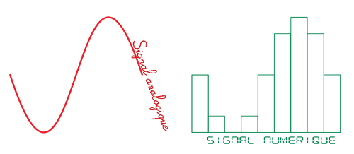
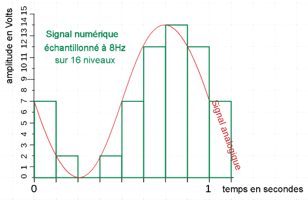

Lorsque vous réalisez un enregistrement numérique, vous devez choisir plusieurs paramètres : format du fichier (Wav, MP3...), profondeur de codage (4 bits, 16 bits... ) et fréquence d'échantillonage (8000 Hz, 44100 Hz...). Puis lorque vous décidez de mettre une musique sur votre site web, vous devez choisir un taux
de transfert et un format compressé... Voici donc dans les pages qui suivent quelques notions pour manipuler les fichiers audio numériques...
La profondeur de codageC'est l'espace mémoire réservé pour chaque échantillon sonore lors de l'enregistrement numérique. Il s'exprime en bits. Par exemple à 16 bits un échantillon occupe un espace de 2 Octets... si le fichier musical comporte 44100 échantillons par seconde alors l'espace occupé par une seconde de musique sera 44100x2= 88,2 kO
Carmen, La chanson du Toreador (extrait)
Enregistré au format Q1. Qu'obtient-on si on diminue la profondeur de codage d'un fichier audio ?
. un fichier moins volumineux
. un fichier moins volumineux avec une perte de définition
. un fichier plus lourd
. un fichier plus lourd avec une perte de définition
Conclusion 1 : la profondeur de codage
La définition d'une information numérique (image, son ou vidéo) est directement proportionnelle à la profondeur de codage. (Le poids du fichier également)
Lors de l'enregistrement d'un son choisissez la profondeur de codage maximum que votre matériel peut offrir.Voici quelques valeurs pour vous fixer une échelle de grandeur :
4 bits : définition faible
16 bits : définition réaliste Hi-Fi
32 bits : définition professionnelle
La fréquence d'échantillonnage
C'est le nombre d'échantillon capturé en une seconde lors de l'enregistrement numérique. C'est une fréquence, elle s'exprime donc en Hertz (Hz).
Une seconde de musique stéréo à 44100 Hz donnera donc 44100 à droite plus 44100 à gauche soit 88200 échantillons.
Si on considère une profondeur de 16 bits=2 Octets, on peut calculer le volume du fichier obtenu : 88200x2=176,4 kO
Carmen, Habanera (extrait)
Enregistré au format
Echantillonné à la fréquence Poids du fichier Wav 16 bits Stéréo
44 100 Hz stéréo 5 259 ko Wav 16 bits Stéréo
16 000 Hz stéréo 1 909 ko Wav 16 bits Stéréo
8 000 Hz Stéréo 955 ko Wav 16 bits Stéréo
4 000 Hz Stéréo 478 ko Q2. Quelle fréquence d'échantillonnage doit-on choisir pour obtenir un fichier de la définition choisie ?
. 44100 Hz pour une définition Hi-fi
. 44100 Hz pour une faible définition
. 4000 Hz pour la meilleur définition
. 8000 Hz pour une définition faible de type téléphoniqueConclusion 2 : La fréquence d'échantillonnage
C'est un paramettre déterminant pour la qualité du son. Voici quelques valeurs pour vous fixer une échelle de grandeur :
96 000 Hertz : nouveau standard qualité professionnelle
44 100 Hertz : qualité d'un CD audio Hi-Fi
8 000 Hertz : qualité téléphonique
Q3. Soit un signal de 1 seconde échantillonné à 8 Hz sur 256 niveaux. Quel est le poids du fichier en Octets ?
L’amplitude est codée sur 256 niveaux cela signifie que 256 = 2^8 = 8 bits, or on sait que 8 bits = 1 Octet. Donc il faut 1 Octet pour coder chaque échantillon.
Par ailleurs , le signal est échantillonné à 8 Hz cela signifie 8 échantillons par seconde, or le fichier dure 1 seconde donc nous avons en tout 8 échantillons.
Comme chaque échantillon est codé sur 1 Octet, alors le poids du fichier sera donc 1 x 8 = 8 Octets
Q 3.1. Si le son dure 1 heure quel sera l’espace occupé par le fichier en Octets ?
Q 3.2. Calculez maintenant, le poids si le signal de 1s était échantillonné avec 44100 Hz et avec 65536 niveaux.
Conclusion 3 : Le poids d'un fichier son
Le poids en Octet d'un fichier son est fonction du nombre de niveaux d'échantillonnage, de la fréquence d'échantillonnage et de la durée du signal.
Par exemple un signal de 5 secondes, sur 32 bits (=4 Octets) à 44100Hz pèsera 5 x 4 x 44100 = 882 kO
Le débit ou taux de transfertUn CD audio débite 44 100 échantillons de 16 bits en 1 seconde à gauche et à droite en même temps (stéréo) ce qui donne 44100x16x2 = 1 411 200 bits par seconde... C'est un débit énorme : ça passe par les "gros tuyaux" entre le lecteur CD et l'ordinateur, mais ça ne passe pas par les "petits tuyaux" d'Internet... d'ou la nécessité de réduire le volume (tout en conservant la qualité) c'est le rôle de la compression MP3.
Lorsque vous réalisez la compression MP3 vous devez choisir un taux de transfert en kilo bits par secondes (kb/s)... Une compression MP3 à 8kb/s donnera un fichier très compressé qui sera vite téléchargé... mais avec une forte perte de qualité ! A vous de décider du compromis qualité/vitesse qui convient à votre fichier.
Carmen, ouverture
Enregistré au format
en Kilo Bits par Secondesmp3 Stéréo 44 100 Hz mp3 Stéréo 44 100 Hz Q 4.1. Soit une musique mp3 de 10 secondes enregistrée à 320 kb/s, quel sera son poids en kb ?
. 10 x 320 = 3200 kb
. 320 /10 = 32 kb
. 320 /8 = 40 kbQ 4.2 Avec un modem 56 kb/s, combien de temps durera le téléchargement de la musique précédente ?
. 3200 / 56 = 57,1 s
. 56 x 10 = 560 s
. 10 x 56 / 320 = 1,75 s
Conclusion 4 : Le débit ou taux de transfert Le taux de transfert doit être adapté à la vitesse de connexion Internet. Un taux de transfert élevé donne une bonne qualité mais nécessite une grande vitesse de connexion. Pour conserver une bonne qualité sonore ne compressez pas en dessous de 128 kb/s.
Exemple simple d'échantillonnage :
exemple de d'échantillonnage numérique obtenu avec un CAN à quantification linéaire par défaut - 4 bits - 8 Hz
